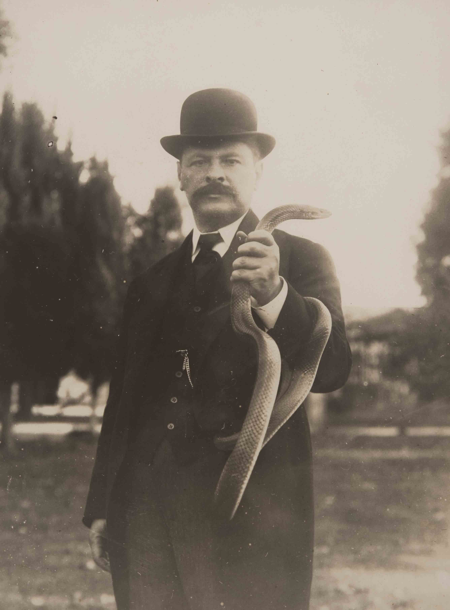

Vital Brazil (1865–1950)
Vital Brazil foi um médico e pesquisador brasileiro, pioneiro no desenvolvimento de soros antiofídicos e fundador do Instituto Butantan. Suas descobertas levaram a criação de soros específicos para vários tipos de venenos, tais como soros antiofídicos, antiescorpiônicos, antitetânicos e antidiftéricos. De acordo com o Instituto Butantan, são distribuidas 556 mil doses desses soros ao SUS por ano.